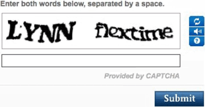
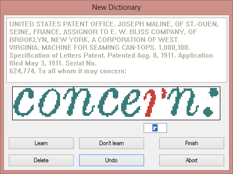

Tweet
Tweet
Whatever the power and sophistication of the artificial and linguistic intelligence, some OCR systems are equipped with an extra weapon to boost the recognition accuracy: they allow the user to train the system on specific fonts.
Actually, captchas have sometimes been used for this very purpose. Unknowingly, you have trained OCR systems ocassionally when you filled out a web form and entered the words of the captcha to prove you’re a human being, not a machine!

OCR learning tools may offer an efficient and worthwhile way of improving the recognition on difficult documents that aren’t recognized optimally at first: user verification in pop-up style not only flags doubtful characters but also increases the system’s precision.
Here’s how it works: the OCR software presents the questionable characters in pop-up style at the end of the recognition, before the final results are saved, and you, the user, go over them to confirm or correct the temporary solution of the system.

The solutions confirmed by the user are memorized, increasing speed and confidence as you go along. The results of such training sessions are stored in “font dictionaries” for future use. Using such OCR software means you can render it more intelligent each time!
But training is about more than just confirming doubtful characters — think of distorted font shapes as you will find in real documents.
And you can train the OCR software on new symbols: special characters such as mathematical symbols or dingbats that the software doesn’t pretend to recognize. For example: you might train the OCR system so that it recognizes the bitmap ✆ as “Tel”.
Training the system on new symbols is but a very minor aspect of text recognition. Generally speaking, the symbol sets of the various OCR packages are almost identical — in so far as they cover the same languages. One OCR package may recognize the American cent (¢) symbol and another may not; one OCR package may recognize the “©” (copyright) and “®” (registered trademark) symbols, another may not.
! ¡ ? ¿ _ — . • * ‘ ’ “ ” „ $ £ ¥ €
# @ < > [ % + ] ( ) / \ & § = ° « »
Check whether the languages you want to read are supported, but don’t bother checking if an occasional special symbol is recognized.
Training does not apply to the Asian languages such as Japanese and Chinese. Learning hardly makes sense for these languages which have thousands of different symbols (so-called “ideograms”). (In a large Chinese dictionary there are 40,000 to 50,000 characters, while the telegraphic code book contains nearly 10,000 symbols. Some 3,000 symbols are used on a daily basis.) And you’d have to be able to enter the ideograms by hand, not an easy task when using a Western keyboard…
Whether you’re going to validate, proofread the recognition results in this way depends on the type of application. Some OCR systems are high on substitutions, others are high on rejection. When the system is unsure, do you accept the temporary “guess” of the system or do you want the software to reject the unsure solutions?
Mainstream OCR systems — the software packages you find in computer shops — prefer substitution over rejection. The first objective of such software is to recognize any document you might scan. The OCR software always tries hard to come up with a solution, even if that means making an occasional error.
In applications where data, not documents, gets read, the OCR system is designed to reject any character below a certain confidence threshold. We’re now talking about large accounts where forms are read automatically, financial institutions where checks are encoded by a machine instead of an operator etc. Misreading data in such a context is too big a risk to be taken, and the OCR system is fine-tuned to exclude that situation.
Training the system further — The accuracy of OCR software — How good are your scanning skills? — With a little help from the friends — Recognizing snapshots — Recognizing prescanned images and faxes — Repurposing PDF files
Home page — Intro — Scanners — Images — History — OCR — Languages — Accuracy — Output — BCR — Pen scanners — Sitemap — Search — Contact – Feedback